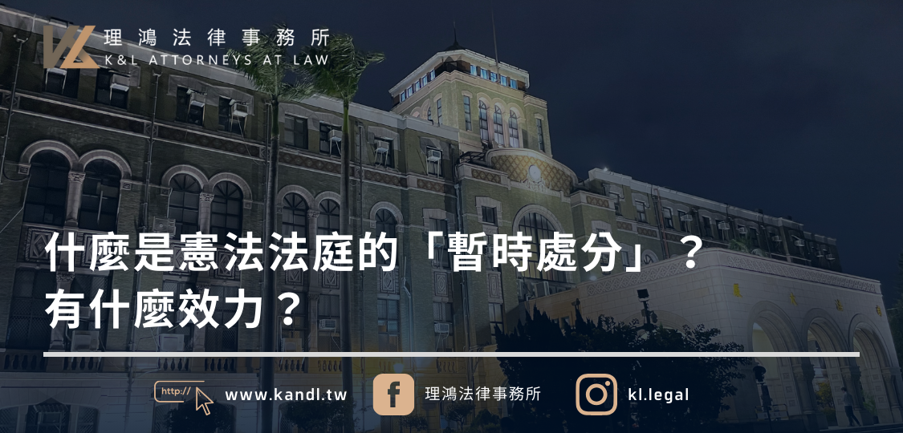

2024.07.11
什麼是憲法法庭的「暫時處分」？有什麼效力？

文 / 郭柏鴻律師
憲法法庭有審查特定的法規範或是法院的裁判是否牴觸憲法的權力，但案件審理有時曠日廢時，有時等到審理結果爐，當事人的權利也已經難以回復了，這時候該怎麼辦？
憲法訴訟中的「暫時處分」
依照憲法訴訟法第 43 條規定，憲法法庭為了避免憲法所保障的權利或公益遭受難以回復的重大損害，而且具有急迫必要性，也沒有其他手段可以防免時，可以依當事人的聲請或依職權，針對與聲請案件相關的爭議、法規範的適用或原因案件裁判的執行等事項，為暫時處分的裁定。
舉例而言，如果立法院通過了有違憲疑慮的法律，在憲法法庭還沒有作成違憲判決前，為了避免這段期間當事人的憲法上權利或是公益將受到難以回復的重大損害，憲法法庭就可以先作成「暫時處分」，讓法律先「暫時停止」適用，等待憲法法庭在本案中確定法律的合憲性。在舊法時期，大法官曾作成釋字第 599 號解釋，讓立法院通過的「請領身分證時應留存指紋」的戶籍法相關規定先暫時停止適用。
若是在裁判憲法審查的情況，憲法法庭則可以讓法院裁判先停止執行，等待憲法法庭確認該裁判的合憲性。像是在著名的台義未成年子女親權案，憲法法庭曾作成 111 年憲暫裁字第 1 號裁定，讓法院的裁定暫時停止執行，使未成年子女先暫時不用和生父回義大利。
暫時處分的期限
既然稱為暫時處分，顧名思義其僅具有「暫時」的效力。憲法訴訟法規定，暫時處分在下列情況會失效：
- 1. 聲請案件（本案）經憲法法庭作成裁判。
- 2. 暫時處分作成後超過 6 個月。
- 3. 經憲法法庭撤銷。
舉例來說，在台義子女案中，憲法法庭於 111 年 3 月 18 日作成暫時處分，之後在同年 5 月 27 日針對本案作成了 111 年憲判字第 8 號判決，宣告法院的裁定違憲，此時暫時處分也同時失效。
聲請暫時處分的程序
首先，要聲請暫時處分，一定要先有「本案」存在，暫時處分必須附帶於裁判憲法審查或是法規範憲法審查的聲請案之上，不能獨立聲請。
憲法法庭在作成暫時處分裁定前，可以命當事人或關係人到庭陳述意見或為必要的調查。此時依照憲法法庭審理規則第 53 條規定，憲法法庭可以指定大法官行準備程序。
最後，憲法法庭要作成暫時處分裁定時，應經過大法官現有總額 3 分之 2 以上參與評議、現有總額過半數同意。以目前大法官現有總額 15 名為例，至少須有 10 位參與評議、8 位同意才能作成暫時處分裁定。
 回上一頁
回上一頁